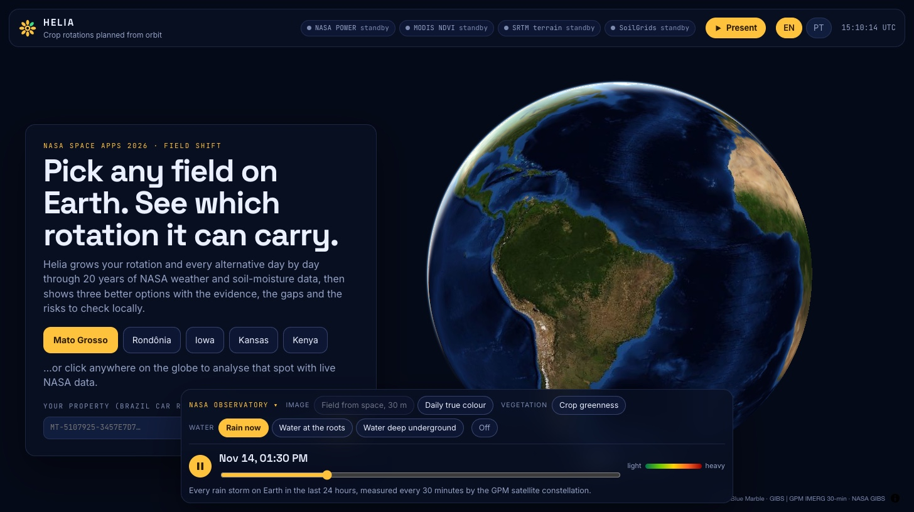
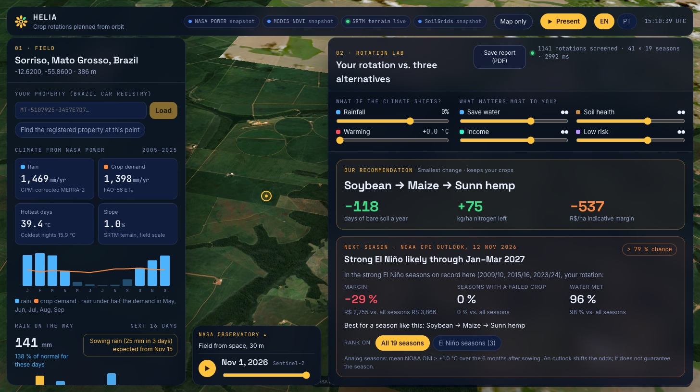
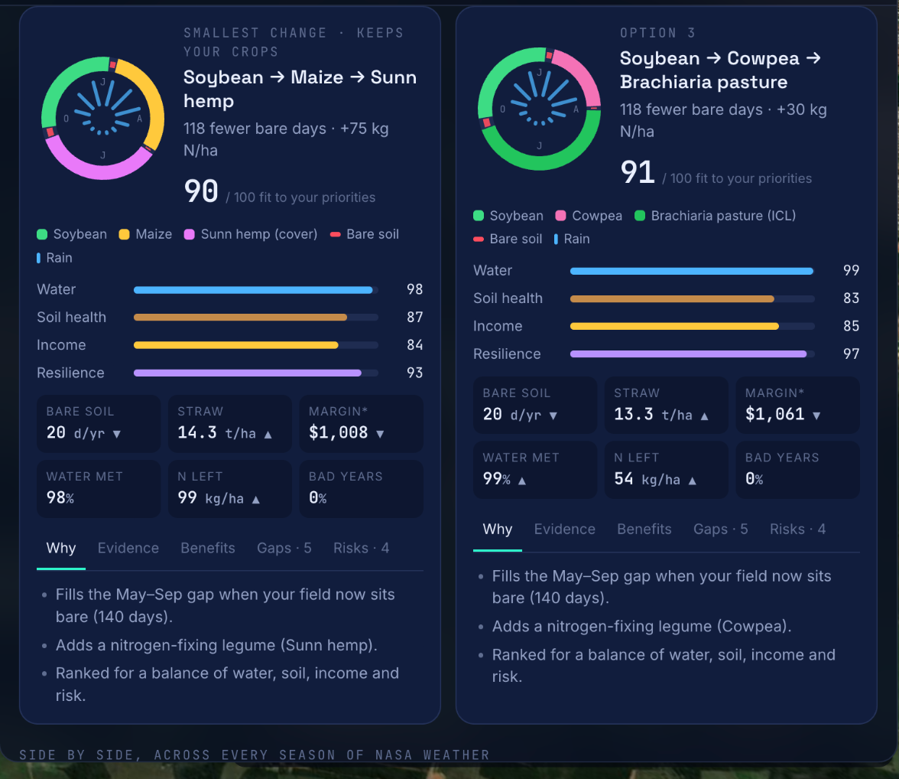

Pick any field on Earth. Helia grows your rotation and every alternative through 20 years of NASA data, and shows three better options with the evidence, the gaps and the risks.
Team [TEAM NAME] · [Member 1] · [Member 2] · [Member 3] · Florianópolis, Brazil

Adding a new crop is a gamble: it may protect the soil but use too much water, miss its season, or have no buyer. NASA has decades of weather and soil-moisture data for every field, but farmers can't turn it into a rotation decision.

MODIS NDVI shows how many crops the field really carries and when it lies bare.
The farmer sets priorities: save water, soil health, income, low risk.
Each option: why, evidence, benefits, information gaps and risks to check locally.
What if it rains 30% less? Drag a slider; 20 years re-run in 0.1 s.
38 official yield series (IBGE, Eurostat, Statistics Canada): 36 move with the simulation. It ranks options and risky years; it is not a yield forecast.
NOAA's outlook re-ranks every option on past seasons like it (2009/10, 2015/16, 2023/24). IBGE: those harvests were 8–9% below trend in central Brazil.
| Dataset | What it does in Helia |
|---|---|
| NASA POWER (MERRA-2, CERES, GPM-corrected rain) | 21 years of daily weather and root-zone soil wetness drive the crop and water simulation, anywhere on Earth |
| MODIS Terra MOD13Q1 NDVI | Reads the field's real crop cycles and bare months (our earlier award-winning phenology work) |
| HLS (Landsat 8/9 + Sentinel-2) 30 m, found through NASA CMR | A year of cloud-free photos of the field itself: watch the crops grow, get harvested, and the soil lie bare |
| GPM IMERG 30-min, SMAP L4, GLDAS (GIBS) | Playable layers: every storm on Earth in the last 24 h, water at the roots, water deep underground |
| SRTM elevation | Field slope for the erosion factor and the 3D view |
| Partners: ESA Sentinel-2, ISRIC SoilGrids, FAO-56/33 | Field-scale basemap, soil texture, crop water parameters |
| Today: soybean → maize → fallow | Smallest change | |
|---|---|---|
| soybean → maize → sunn hemp | ||
| Bare soil | 138 d/yr | 20 d/yr |
| Rain on unprotected soil | 344 mm | 209 mm |
| Straw returned | 9.5 t/ha | 14.3 t/ha |
| Nitrogen left for next crop | 24 kg/ha | 99 kg/ha |
| Indicative margin* | $1,103 | $1,008 |
The trade-off is shown, not hidden: ~US$95/ha of cover seed buys 118 protected days and 75 kg N/ha. *Indicative prices, 19 NASA POWER seasons, rainfed.

Try it: helia-fields.netlify.app · code: github.com/Muril0zz/helia-fields